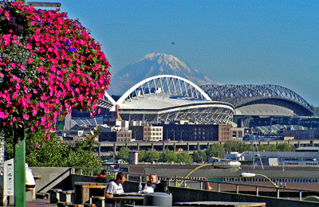

Greetings friends and family!
Dirk and Carol and Starfire
Greetings friends and family!
 We have reached the midpoint of tour, and as always there are already enough stories for a lifetime. We have performed three shows, and each one has seemed to get better as we go. The response of the people who have come to see it has been wonderful and very meaningful. We have also had the chance to catch up with many friends and family members along the way, and that has been really special.
We have reached the midpoint of tour, and as always there are already enough stories for a lifetime. We have performed three shows, and each one has seemed to get better as we go. The response of the people who have come to see it has been wonderful and very meaningful. We have also had the chance to catch up with many friends and family members along the way, and that has been really special.
 Many of you have no doubt heard about an incident that took place today on the streets of Seattle during our free time. There was a shooting right in the midst of a crowded shopping area. A couple members of Starfire witnessed the shooting outside a store where several others in the group were shopping. Needless to say it was a very traumatic experience and really shook us up. The good news is that the man who was shot is going to be okay, and your kids responded extremely appropriately, responsibly and safely. They instinctively did exactly the right thing, seeking shelter, laying low, and contacting us immediately. We are all safe and well.
Many of you have no doubt heard about an incident that took place today on the streets of Seattle during our free time. There was a shooting right in the midst of a crowded shopping area. A couple members of Starfire witnessed the shooting outside a store where several others in the group were shopping. Needless to say it was a very traumatic experience and really shook us up. The good news is that the man who was shot is going to be okay, and your kids responded extremely appropriately, responsibly and safely. They instinctively did exactly the right thing, seeking shelter, laying low, and contacting us immediately. We are all safe and well.
 For all of us it is a timely reminder that our world has yet to realize the liberating and transforming message of God's all-eoncompassing love, and it has made us even more determined to share that message with that world. It is a vivid and urgent reminder that we are being called to "let the love shine through..."
For all of us it is a timely reminder that our world has yet to realize the liberating and transforming message of God's all-eoncompassing love, and it has made us even more determined to share that message with that world. It is a vivid and urgent reminder that we are being called to "let the love shine through..."
 Thanks for your prayers, your love, and your support. We couldn't be doing this without all three!
Thanks for your prayers, your love, and your support. We couldn't be doing this without all three!
Dirk and Carol and Starfire
Bonus pictures of July 29's show and July 30
July 30, 2007
In the morning we had showers, a tour, and free time at the University of Puget Sound. In the afternoon we drove to Seattle for an afternoon and early evening of free time in and around Pike Place Market.
July 30th Route.
Mom!

The view one direction from Pike Place Market

The view in another direction
My barista at the original Starbucks store!
Riding the Pike Place Pig
Meeting a celebrity
Relaxing before heading back to the bus
It was a short night last night ... "class night."
Riding the "merpig," one of Seattle's many pig sculptures
Almost late for the bus!
Our destination: The Garden Street United Methodist Church (built in 1910)
Previous Day's Page
 Back to Main Page
Back to Main Page
 Next Day's Page
Next Day's Page
Questions? Contact Bob Bolles - bolles@ai.sri.com